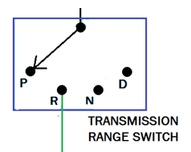
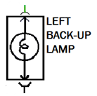
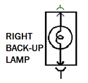

Digital Multimeter
SELECT MODE
- - - -
RED: not placed | BLK: not placed
HOLD
REL
RANGE
MIN MAX
RED
—
—
BLK
—
—
⚫
COM
🔴
VΩmA
10A
How to Use
1. Select a meter mode.
2. Select RED or BLACK probe.
3. Click test points on the circuit.
4. Read the meter display.
5. Click a component or wire to select it as the fault.
6. Click Submit Diagnosis.
7. Right-drag = pan. Scroll = zoom.
2. Select RED or BLACK probe.
3. Click test points on the circuit.
4. Read the meter display.
5. Click a component or wire to select it as the fault.
6. Click Submit Diagnosis.
7. Right-drag = pan. Scroll = zoom.
x: — y: —
Diagnosis
Window Simulator
LEFT
⚙
Idle
RIGHT
⚙
Idle
Master PW Switch
LEFT
RIGHT
Passenger Switch
RIGHT
LED Circuit Simulator
💡
OFF
Circuit Switch
OFF
ON
Horn Simulator
📢
))) )))
SILENT
Horn Button
Cooling Fan Simulator
70°F
ENGINE COLD
NOT RUNNING
COOLING FAN
⚠ ENGINE OVERHEATING — FAN INOPERATIVE
SRS Airbag Simulator
SRS
OFF
▶ Scan Tool
No DTCs present
Back-Up Lamp Simulator


LEFT

RIGHT
Power Door Lock Simulator
UNLOCKED
RF DOOR
UNLOCKED
LF DOOR
Left Door Switch
Right Door Switch
🔍 Begin Diagnosis
Use the DVOM to test the circuit. Place probes on test points to read voltage, resistance, or continuity. When you have identified the fault, click the component or wire and submit your diagnosis.
Submit Diagnosis
Selected: Nothing selected
Points if correct now: 10 / 10